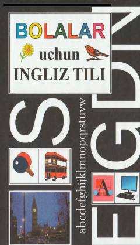

BUBolalar va boshlovchilar uchun qiziqarli boshlang'ich ingliz tili o'quv qo'llanmasi.
Ushbu qo'llanma ingliz tilini mustaqil ravishda yoki o'qituvchi yordamida tez va oson o'rganishni istagan bolalar hamda kattalar uchun mo'ljallangan. Kitobda asosiy harflar, tovushlar, qiziqarli so'zlar va boshlang'ich darslar sodda usulda tushuntirilgan.